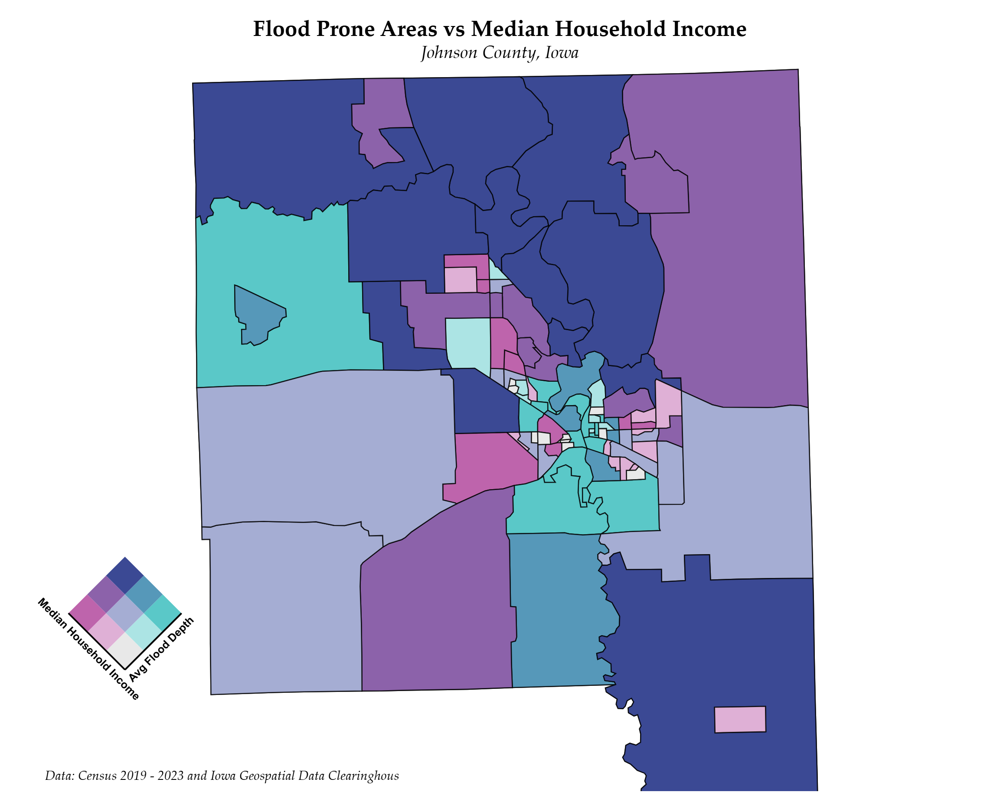

A Spatial Analysis of Exposer and Risk to Flood Hazard in Johnson County, Iowa

Flood Hazard Zone Identification
This map identifies block groups with higher and lower risk of flooding based on average flood depth (measured in feet) in Johnson County, Iowa.

Flood Vulnerability by Population Density
This map illustrates flood-prone areas alongside population density in Johnson County, Iowa.

Flood Vulnerability by Median Household Income
This map shows flood prone areas vs median household income in Johnson County, Iowa.

Flood Risk Assessment for Different Structures
The map analyzes buildings/structures in Johnson County, Iowa which are at higher risk of suffering damages from flood based on average flood depth.

Project Proposal
This map identifies buildings/structures established in 500-years return period floodplain in the Johnson County, Iowa.